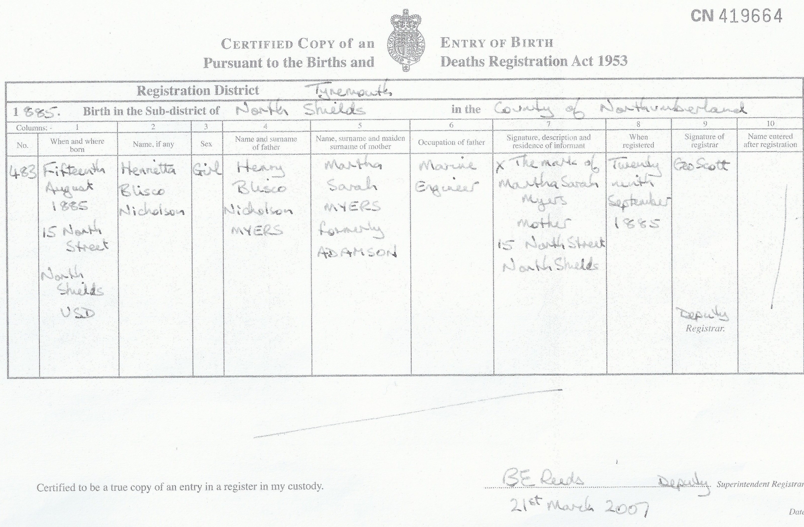
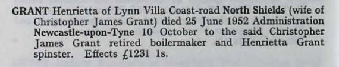
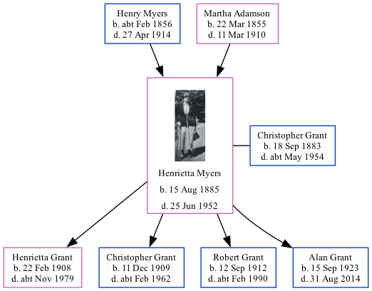

Henrietta Briscoe Nicholson Grant (née Myers) 1885 - 1952
[ Home ] | [ Calendar ] | [ Surnames Index ] | [ Family History ]The daughter of Henry Myers (a steamboat man) and Martha Adamson, Henrietta Myers was born in North Shields, Tyne and Wear, England on Aug 15, 1885<span class="citation">1,2,3,4,5</span> and married Christopher Grant (a ships boilermaker & plater with whom she had 4 children: <a href="I3065.html">Henrietta Briscoe Nicholson</a>, <a href="I3066.html">Christopher James</a>, <a href="I3080.html">Robert Myers</a> and <a href="I3074.html">Alan</a>) in Tynemouth, Tyne and Wear, England around Aug 1906<span class="citation">7</span>.</p><p>Henrietta spent all of her life in Tyne and Wear, England. Throughout her life, she lived in several places around the county: at 16 Appleby Street in North Shields on Apr 5, 1891<span class="citation">1</span>; at 48 Appleby Street in North Shields on Mar 31, 1901<span class="citation">2</span>; at 96 Elsdon Street in Tynemouth on Apr 2, 1911<span class="citation">8</span>; and on 4 Coast Road in Tynemouth on Sep 29, 1939<span class="citation">9</span>. <p>She died on Jun 25, 1952 in Tynemouth<span class="citation">6</span>.
Parents
- Henry Briscoe Nicholson was born c. Feb 1856
- Martha Sarah was born on Mar 22, 1855
Children
- Henrietta Briscoe Nicholson was born on Feb 22, 1908
- Christopher James was born on Dec 11, 1909
- Robert Myers was born on Sep 12, 1912
- Alan was born on Sep 15, 1923
Citations
- 1891 England, Wales & Scotland Census - Findmypast (was age 5 and the daughter of the head of the household)
- 1901 England, Wales & Scotland Census - Findmypast (was age 15 and the daughter of the head of the household)
- llections from: United Kingdom, England;
- Volume: 10B; Page: 185; Line Number: 259; Record set: England & Wales Births 1837-2006; Subcategory: Civil Births; Category: Birth, Marriage & Death (Parish Registers); Collections from: United Kingdom, England;
- ingdom, England;
- Volume: 1B; Page: 468; Line number: 105; Record set: England & Wales Deaths 1837-2007; Subcategory: Civil Deaths & Burials; Category: Birth, Marriage & Death (Parish Registers); Collections from: United Kingdom, England; Volume: 1B; Page: 468; Line number: 105; Record set: England & Wales Deaths 1837-2007; Subcategory: Civil Deaths & Burials; Category: Birth, Marriage & Death (Parish Registers); Collections from: United Kingdom, England;
- England & Wales Marriages 1837-2005 - Findmypast
- 1911 Census for England & Wales - Findmypast (was age 25 and the wife of the head of the household)
- 1939 Register - Findmypast (was the wife of the head of the household)
Media
Henrietta Briscoe Nicholson Myers

Henrietta Briscoe Nicholson Myers - Birth Certific

Henrietta Grant - Probate

England & Wales births 1837-2006 - BMD/B/1885/3/AZ/000397/259
England & Wales marriages 1837-2005 - BMD/M/1906/3/AZ/000287/187
1911 Census for England & Wales - GBC/1911/RG14/30762/0399/2
1939 Register - TNA/R39/2952/2952C/014/19
England & Wales deaths 1837-2007 Transcription - BMD-D-1952-2-AZ-000349-105
Family Trees - FMP/1249063097
Family Tree
Generated by Ged2Site. Last updated on Jul 20, 2025